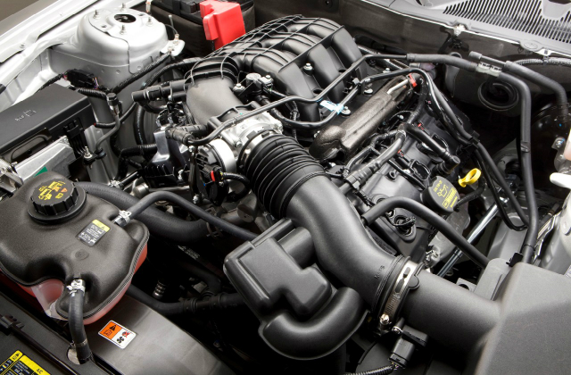

How does a four-stroke engine make power?
From these images and you'll see that a car engine makes its power by endlessly repeating a series of four steps (called strokes):

Intake: The piston (green) is pulled down inside the cylinder (gray) by the momentum of the crankshaft (gray wheel at the bottom). Most of the time the car is moving along, so the crankshaft is always turning. The inlet valve (left) opens, letting a mixture of fuel and air (blue cloud) into the cylinder through the purple pipe.
Compression: The inlet valve closes. The piston moves back up the cylinder and compresses (squeezes) the fuel-air mixture, which makes it much more flammable. When the piston reaches the top of the cylinder, the sparking plug (yellow) fires.
Power: The spark ignites the fuel-air mixture causing a mini explosion. The fuel burns immediately, giving off hot gas that pushes the piston back down. The energy released by the fuel is now powering the crankshaft.
Exhaust: The outlet valve (right) opens. As the crankshaft continues to turn, the piston is forced back up the cylinder for a second time. It forces the exhaust gases (produced when the fuel burned) out through the exhaust outlet (blue pipe).
What are the main parts of a car engine?
Car engines are built around a set of "cooking pots" called cylinders (usually anything from two to twelve of them, but typically four, six, or eight) inside which the fuel burns. The cylinders are made of super-strong metal and sealed shut, but at one end they open and close like bicycle pumps: they have tight-fitting pistons (plungers) that can slide up and down inside them. At the top of each cylinder, there are two valves (essentially "gates" letting things in or out that can be opened and closed very quickly). The inlet valve allows fuel and air to enter the cylinder from a carburetor or electronic fuel-injector; the outlet valve lets the exhaust gases escape. At the top of the cylinder, there is also a sparking plug (or spark plug), an electrically controlled device that makes a spark to set fire to the fuel. At the bottom of the cylinder, the piston is attached to a constantly turning axle called a crankshaft. The crankshaft powers the car's gearbox which, in turn, drives the wheels
How do we get power from petroleum?
Cars, trucks, trains, ships, and planes—all these things are powered by fuels made from petroleum. Also known as "crude oil", petroleum is the thick, black, energy-rich liquid buried deep underground that became the world's most important source of energy during the 20th century. After being pumped to the surface, petroleum is shipped or piped to a refinery and separated into gasoline, kerosene, and diesel fuels, and a whole host of other petrochemicals—used to make everything from paints to plastics.
Petroleum fuels are made from hydrocarbons: the molecules inside consist mostly of carbon and hydrogen atoms (with a fewer other elements, such as oxygen, attached for good measure). Wood, paper, and coal also contain hydrocarbons. We can turn hydrocarbons into useful energy simply by burning them. When you burn hydrocarbons in air, their molecules split apart. The carbon and hydrogen combine with oxygen from the air to make carbon dioxide gas and water, while the energy that held the molecules together is released as heat. This process, which is called combustion, releases huge amounts of energy. When you sit round a camp fire, warming yourself near the flames, you're really soaking up energy produced by billions of molecules cracking open and splitting apart!
How many cylinders does an engine need?
One problem with the four-stroke design is that the crankshaft is being powered by the cylinder for only one stage out of four. That's why cars typically have at least four cylinders, arranged so they fire out of step with one another. At any moment, one cylinder is always going through each one of the four stages—so there is always one cylinder powering the crankshaft and there's no loss of power. With a 12-cylinder engine, there are at least three cylinders powering the crankshaft at any time—and that's why those engines are used in fast and powerful cars.
How big do the cylinders need to be?
It's not just how many cylinders a car has that's important but how much power each one can make as it pushes out its piston. That depends on the size of the cylinder, which, in turn, depends on two key measurements: the diameter of the cylinder (called its bore) and how far the piston moves out (its stroke). The area of a circle is π × radius2, and since the bore is twice the radius, the useful volume of a car cylinder is (π/4) × bore × bore × stroke. In physics terms, the volume of the cylinder is related to how much work the fuel does as it expands, how much energy it transfers to the piston, and (if we consider how often this happens), how much power the car makes. So the bore and stroke are very important—and that's why they're often quoted in technical specifications for car engines along with the number of cylinders. You'll often see these measurements written in the form bore × stroke (so, for example, 90 × 86mm means a bore of 90mm and a stroke of 86mm). You'll also see the total volume of a car's cylinders quoted in a measurement called the displacement, which is the volume of a car's cylinders multiplied by how many of them there are. (In other words, it's π/4 × bore × bore × stroke × number of cylinders.) So when you hear a car described as having a "two-liter engine," that usually means it has four cylinders of 0.5 liters or six cylinders of 0.33 liters. The displacement is a rough guide to how much power a car engine can make and you'll usually see it quoted in either liters or cc (cubic centimeters); 1 liter is the same as 1000 cc.